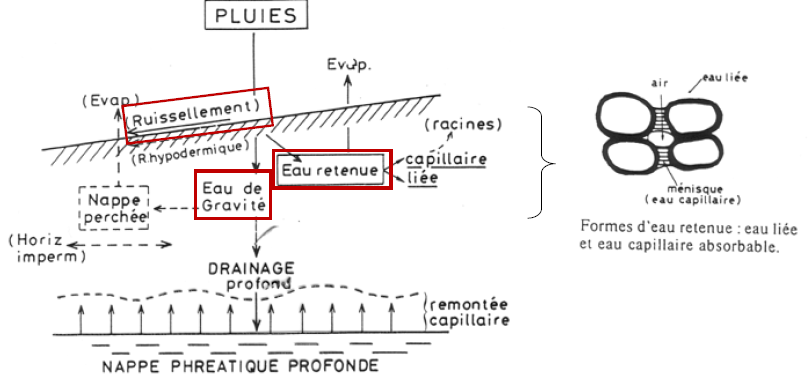

Les propriétés du sol
I. Les propriétés physiques
1. La texture du sol
La texture du sol est l'analyse granulométrique. Il permet de fixer avec précision les pourcentages des divers constituants du sol. Il est alors possible de classer les différentes textures. Les classes de texture sont déterminées d'après des triangles texturaux représentant la répartition des éléments constituants du sol selon leurs dimensions. Les triangles texturaux sont divisés en secteurs qui correspondent à un certain nombre de classes de texture.
La texture conditionne directement la structure du sol, et donc la porosité et le régime hydrique. La proportion d'argile influence la formation du complexe argilo-humique, la capacité d'échange, la fertilité et la profondeur d'enracinement. C'est une propriété stable ne variant que sur l'évolution à long terme du sol. Connaître la structure d'un sol ne suffit pas pour prévoir ses propriétés physiques (perméabilité, aération, aptitude au tassement,...). Cette connaissance indique la tendance du sol :
- sols où dominent les sables grossiers sont perméables et "filtrants", se réchauffent vite et ne s'agglomèrent pas en mottes
- si aux sables grossiers sont associés beaucoup d'éléments fins, ceux-ci ont tendance à les colmater, rendant le sol imperméable en surface et "battant"
- si aux sables fins et limons sont associés suffisamment d'argile, les éléments se structurent, donnant au sol une bonne perméabilité
Texture minérale : composition granulométrique définie d’après la proportion des particules minérales du sol inférieures à 2mm, classées, après destruction des agrégats,par catégories de grosseurs en fractions principales correspondant à une échelle internationale
Texture organique : reflet de la proportion de fibres et de matériel fin micro-agrégé dans les matériaux holorganiques (uniquement constitués d'organique).
2. La structure du sol
La structure d'un sol est un mode d'assemblage, à un moment donné, de ses constituants solides (minéraux et organiques). C'est un état qui peut donc évoluer dans le temps. La solidité de la structure, sa résistance aux agents de dégradation est évaluée par des tests de stabilité structurale. La structure d'un sol s'observe aux échelles macroscopiques ou microscopiques. Elle dépend directement de la texture et aussi de l'état des colloïdes, du taux d'humidité ou de matière organique et, dans une large mesure, de l'activité de la faune.
Colloïde : substance formée d'éléments de très petite taille, les micelles capables de floculer ou de se disperser dans un liquide : argiles, humus, silice, alumine ou fer.
Agrégats : assemblages élémentaires d'un sol, constitués de particules minérales et organiques et des pores. Les agrégats ont une importance dans l'organisation structurale du sol. Il en existe 4 types :
- micro-agrégats de 2 à 20 μm : très stables,formés de matière organique fortement aromatique liée aux argiles et aux limons fins, et de polysaccharides bactériens;
- micro-agrégats de 20 à 250 μm : formés de limons grossiers et des sables, agrégés par des polysaccharides bactériens;
- macro-agrégats de 250 à 2000 μm : formés des précédents et de sables grossiers reliés par des polysaccharides,des cellules bactériennes et du mycélium;
- macro-agrégats > 2000 μm : composés des précédents associés à des particules de matière organique libre, des racines et du mycélium, ces derniers consolidant le tout.
Il existe 5 catégories de structures :
-
absence d'agrégats -> structure lithiques ou lithologiques héritées de la roche mère
-
absence d'agrégats, structures observées dans les matériaux minéraux ou organo-minéraux :
- structure massive, continue ou compacte : matériau cohérent = les éléments sont noyés/fondus dans une masse d'argile dispersée formant un bloc homogène
- structure particulaire : matériau formé de particules libres et individualisés, les éléments sont juxtaposés sans liaison colloïdales (sans cohésion, ex. sables, graviers)
-
présence d'agrégats arrondis
- structure grenue : agrégats plus ou moins sphériques
- structure grumeleuse : agrégats irréguliers plus ou moins agglomérés
- structure micro grumeleuse ou floconneuse : agrégats grumeleux < 1mm
-
présence d'agrégats à arêtes anguleuses
- orientation horizontale des agrégats : structure lamellaire
- orientation verticale, agrégats allongés : structure prismatique
- faces planes nombreuses, arêtes vives inégales :structure polyédrique anguleuse
- faces planes nombreuses, arêtes émoussées : structure polyédrique sub anguleuse
-
structure formées à partir d'un matériel surtout végétal
- structure fibreuse : résidus organiques bruts, fibreux (mousses, tourbe, compost)
- structure feuilletée : résidus organiques issus de feuilles d'aiguilles, arrangés horizontalement
- structure coprogène ou granulaire : amas millimétriques globulaires (déjections) individualisés
Les différents structures influence indirectement la fertilité des sols.
Structure massive : sol asphyxiant, défavorable à l'activité biologique (mauvaise pénétration des racines, difficulté de creusage de galeries..)
Structure particulaire : le sol meuble, filtrant, vite asséché, si la texture est limoneuse, il existe des risques d'imperméabilité superficielle
Structure avec agrégats arrondis : favorable à la fertilité du sol.
3. La porosité du sol
La porosité d'un sol est l'ensemble des vides du sol. Elle donne une bonne idée de l'état structural avec la possibilité de mesures comparatives.
Porosité selon la taille :
- macro-porosité : vides > 50µm pouvant être remplis par l'eau de gravité et colonisés par les racines moyennes; cette porosité dépend de la structure
- méso-porosité : ou porosité capillaire, vides de 0,2 à 50µm retenant l'eau utilisable par les plantes
- micro-porosité : vides < 0,2µm retenant l'eau inutilisable par les plantes, cette porosité dépend de la structure
Porosité selon leurs origines :
- porosité texturale : liée à l'assemblage des particules élémentaires
- porosité structurale : liée aux facteurs externes (ex. fissures, craquelures, galeries via les vers de terre)
La porosité renseigne sur les capacités hydriques ou atmosphérique d'un sol, en volume ou en flux. La circulation de l'eau dépend aussi des relations entre les vides et de leur mode d'arrangement, la seule mesure de la porosité ne suffit donc pas. Le potentiel général de circulation d'eau est mieux révélé par sa conductivité hydraulique qui reflète la capacité de transfert de l'eau dans le sol en intégrant structure, porosité, forme des connections (tortuosité) et degré de relation entre les vides (connectivité). La circulation de l'air est déterminante pour la croissance racinaire et l'activité de la microflore, très sensible à l'anoxie.
4. Conclusion

II. L'eau dans le sol : circulation, rétention et disponibilité
L'eau du sol est un facteur édaphique important aussi bien pour les plantes "aériennes" et les micro-organismes que pour la faune endogée. L'eau intervient dans la nutrition des plantes directement et indirectement, en tant que vecteur des éléments dissous. Bien faire la distinction entre :
- l'eau en rapport avec les propriétés physiques du sol : circulation, capacité de rétention et disponibilité
- l'eau en rapport avec les propriétés chimiques du sol : éléments dissous dont éléments minéraux assimilables
L'eau est un facteur qui conditionne la plupart des processus de formation des sols (pédogenèse)
Taux d'humidité : quantité "totale" d'eau retenue par un sol est la différence de poids d'un échantillon avant et après dessication à 105°C.
Humidité(% de poids frais) = (Poids 105° - Poids frais)/ Poids frais
Le taux d'humidité est facile à déterminer mais pauvre en renseignements écologiques. Il est très sensible aux précipitations récentes, au drainage ou au couvert végétale. Plus intéressant de connaître la répartition de l'eau en fonction des capacités de rétention du sol et les variations du contenu en eau au cours du temps. Ces deux paramètres sont tributaires :
- d'une connaissance précise des formes ou états de l'eau
- des formes de l'eau elles-mêmes dépendantes des forces de rétention.
L'eau tombe sur le sol et se subdivise en 3 fractions : eau de ruissellement, eau de gravité et eau retenue

Selon la force avec laquelle l'eau est retenue au sol et selon sa disponibilité pour les plantes, 3 états ou formes de l'eau dans le sol sont distingués :
-
l'eau de gravité : n'existe dans le sol que quelques heures ou jours après une précipitation, ou s'il existe une nappe phréatique permanente. Lorsque les forces de gravitation s'équilibrent avec la force de rétention du sol, le point de ressuyage est atteint. L'eau restent est conservée dans le sol est constitue la capacité au champ. Le taux d'humidité à la capacité au champ traduit capacité de rétention en eau du sol. Elle circule dans les pores grossiers et moyens verticalement voire obliquement. Elle peut avoir un écoulement rapide ou lent, cela dépend de la taille des pores. Si le sol est perméable, les eaux de gravité alimentent le drainage profond.
-
l'eau utile : mieux retenue par le sol que l'eau de gravité. Elle remplit les pores de 0,2 à 10µm de diamètre à la surface des particules. Les racines l'absorbent jusqu'au point de flétrissement permanent (état hydrique du sol au delà duquel les plantes ne peuvent plus puiser de l'eau et flétrissent). Il est atteint lorsque la force de rétention = force de succion maximale des racines
-
l'eau inutilisable : inutilisable par les plantes sous le point de flétrissement permanent. Forme du film très mince à la surface des particules du sol. L'eau est contenue dans les pores les plus fins de diamètre inférieur çà 0,2µm. Seule une évaporation intense permet de l'éliminer. Même à des températures élevées, il reste toujours un peu d'eau dans le sol, autour de certains minéraux dont elle assure l'hydratation.

La part respective des 3 états au taux d'humidité dépend :
- de la texture
- du taux de matière organique
- la surface des particules entre elles pour l'absorption superficielle
Il existe trois forces s'exerçant sur l'eau du sol :
- force de gravitation par l'attraction terrestre
- force de rétention par les solides
- force de succion par les plantes
Lorsque la quantité d'eau diminue dans le sol, la force de rétention F augmente. La rétention en eau est caractérisée par le potentiel matriciel de l'eau dans le sol. Il s'exprime par le log de la pression négative F (pF = log10(F)). Il est équivalent à la force de succion du sol pour l'eau. Il correspond à l'énergie résultant de la pression de l'eau due :
- aux effets de liaison autour des particules solides
- aux effets de capillarités dans les pores
Notion de potentiel matriciel du sol pF. Quelques valeurs du pF importantes :
-
la capacité au champ, correspond à l'état hydrique du sol in situ après ressuyage par gravité d'une pluie ayant saturé entièrement le solum (pF = 1,8)
-
le point de flétrissement temporaire (pF compris entre 3,9 à 4,0)
-
le point de flétrissement permanent, défini à partir de l'observation des plantes mésophiles/ajustement osmotique possible chez les espèces xérophiles (pF = 4,2)
III. Propriétés chimiques du sol
1. Richesse en éléments minéraux (CEC et taux de saturation)
Richesse en éléments : réserves en ions potentiellement disponibles pour les végétaux. Il comprend des ions en solution et des ions sur le complexe argilo-humique. Les argiles, l'humus et le complexe argilo-humique déterminent la capacité de rétention sur leur surface des ions de la solution du sol (pouvoir absorbant).
Les cations du complexe argilo-humique sont en équilibre avec la solution du sol. Pour un cation donné, il y a un équilibre entre les cations fixés sur le complexe et ceux qui sont libres dans la solution du sol : loi d'équilibre
L'échange d'ions obéit à une loi d'équivalence. Un équivalent - gramme de K+ est échangé contre un équivalent - gramme de Ca2+. Les ions ainsi fixés sur le complexe sont échangeables.
Trois valeurs caractéristiques :
-
Capacité d'échange cationique totale (T) : quantité maximale de cations qu'un poids déterminé de sol est capable de retenir. Plus il y aura de minéraux chargés négativement, plus la capacité d'échange cationique sera forte.
-
Somme des bases échangeables (S) : quantité de cations échangeables fixés sur le complexe à un moment donné (Ca2+, Na+, K+, Mg2+). La différence (T-S) représente l'acidité d'échange c'est à dire la quantité de H+ et de Al3+ fixés.
-
Taux de saturation en bases (V) est le rapport V = S/T x 100
- sols calcaires, riches en calcaire actif : V = 80-90%
- sols formés sur une roche mère sableuse, gréneuse ou granitique pauvres en bases filtrantes : V = <20%.
Plus les argiles ont des feuillets, plus elles ont la capacité d'échange cationiques. Lorsque qu'on a un sol très acide, celui - ci est dé-saturé en base contrairement aux sols plus basique où on aura plus de carbonate qui vont fixés l'eau est le Co2 qui seront saturés en base.
2. Le pH du sol
Le pH mesure l'activité du sol par la concentration des ions H+. pH = -log10 a(H+) (avec a lié à la concentration en proton).
- H+ présents dans la solution de sol
- H+ fixés sur le CAH (adsorbés)
Deux mesures de pH sont distinguées :
- acidité actuelle pHeau : il ne prend pas en compte que les H+ de la solution du sol (pas d'échange)
- acidité potentiel pHKCL : prend en compte les H+ de la solution du sol et ceux fixés sur le complexe adsorbant (CAH). Mise en solution des H+ adsorbés par ajout de KCL ; K+ remplacement sur les H+ sur le CAH.
Le pHeau est plus utile dans l'étude des relations sol-plante ou pour comprendre des processus fonctionnels à court terme.
pHKCL < pHeau -> delta pH : acidité d'échange ou réserve sur le complexe adsorbant. Il varie entre 0,2 et 1,5. L'acidité de réserve est plus faible dans un sol où il y a un pH assez important.
Un sol a tendance à se décalcifié à l'aide de l'eau qui est un peu acide. Des H+ prennent la place des Ca2+.
Notion de pouvoir tampon des sols : capacité d'un sol à résister aux variations de pH, en cas d'apports d'acides ou de bases.
| pH | |
|---|---|
| pH < 3,5 | hyper acide |
| 3,5< pH < 4,2 | très acide |
| 4,2 < pH < 5,0 | acide |
| 5,0 < pH < 6,5 | peu acide |
| 6,5 < pH < 7,5 | neutre |
| 7,5 < pH < 8,7 | basique |
| pH > 8,7 | très basique |
Pouvoir tampon des sols : capacité d'un sol à résister aux variations de pH, en cas d'apports d'acides ou de bases
Plusieurs mécanismes à l'origine du pouvoir tampon dans les sols. S'exerce en 5 phases successives et s'oppose à l'acidification :
- tampon des carbonates (pH de 8,6 à 6,2)
- tampon des silicates (pH de 6,2 à 5,0)
- tampon des argiles (pH de 5,0 à 4,2)
- tampon des hydroxydes d'aluminium (pH de 4,2 à 2,8)
- tampon des hydroxydes de fer (pH < 3,2)
La majorité de sols des régions tempérées ont des pHeau compris entre 4 et 7,5.
Deux sources principales de variation du pH :
- teneur en eau du sol -> dilution dans la solution du sol, précipitations
- activité biologique (émission d'acides organiques, respiration, prélèvement d'ions)
Conséquences : variation saisonnière, pH plus faible en été / pH plus fort en hiver
Mais cela peut être aussi lié aux activité anthropiques agricoles avec les apports d'engrais ainsi que des retombée atmosphériques comme les pluies acides.
Le pH joue un rôle direct dans la solubilité et disponibilité des ions. Plus on aura un pH basique, plus on aura une disponibilité d'azote dans les plantes. Plus les pH seront faible, plus l'azote de type ammonium sera importante. Le nitrate est la forme la plus utiliser par les plantes. Optimum de pH au plan agronomique pour l'assimilabilité des éléments fertilisants et des oligo-éléments : 6,5 < pH < 7,5 (en sols non calcaires). Un seuil à connaître : pHeau < 5 -> présence de Al3+ (risque de toxicité aluminique pour cultures type blé, orge, maïs, luzerne). Mobilité et disponibilité des éléments-traces métalliques (ETM) : rétention du cadmium par phase solide croît exponentiellement avec les pH croissants (très forte si pH > 6,5). Facteur important pour les organismes (vers de terre, bactéries -> patrons globaux de distribution).
3. Potentiel d'oxydo - réduction
Potentiel d'oxydo - réduction (Eh) indique le degré auquel une substance peut oxyder ou réduire une autre substance. Valeur qui reflète les transferts quantitatifs d'électrons des donneurs vers les accepteurs, mesurée au moyen d'un électrode de platine combinée exprimée en mV. Il dépend de la disponibilité de l'oxygène dans les sols : indication sur les processus et l'activité biologique.
Le Eh du sol se répartit en 4 domaines :
-
de 800 à 450 mV : O2 est fortement présent et la nitrification active, la MO est décomposée plus ou moins rapidement
-
de 450 à 0 mV : le milieu devient pauvre en O2, ralentissement de la décomposition de la MO. Si le pH est bas, les processus de réduction débutent rapidement.
-
de 0 à -200 mV : milieu anoxique, la MO se décompose par fermentation anaérobie, des sels ferreux s'accumulent, teintant le matériau en gris bleuâtre - verdâtre (sol hydromorphe).
-
de 200 mV à -300 mV : la réduction est totale -> la MO fermente en dégageant de l'hydrogène sulfuré ou du méthane (tourbière).
IV. Les propriétés biologiques du sol
1. Biodiversité des sols
La diversité biologique décrit la variété de l'ensemble des organismes vivants dans tous les environnements à différents niveaux d'organisation du gène à la biosphère en passant par l'espèce, la communauté et le paysage.
Biodiversité des sols : le sol est le compartiment des écosystèmes terrestres le plus riche en espèces, donc potentiellement un des plus vulnérables. Les atteintes au sol dont l'érosion de sa biodiversité sont prises en compte dans la stratégie européenne de protection des sols. Cependant, il existe encore un manque de connaissances sur la biodiversité du sol. Cette connaissance est primordiale dans l'optique d'un développement durable visant à la préservation des sols.
Un organisme du sol est un organisme qui a au moins un stade de leur cycle de vie dans le sol.
On y trouve des :
- habitants à temps plein
- habitants à temps partiel
Comprend des habitants :
- de la matrice du sol
- des annexes du sol

Faible prise en compte des organismes du sol dans les revues de taxonomie ou systématique. Le nombre de publications ne reflète pas l'importance quantitative des organismes édaphiques. Les organismes édaphiques ne sont pas concernés par l'augmentation générale des publications. Le nombre estimé d'espèces d'arthropodes dans la litière et dans le sol dépasserait considérablement celui proposé par Erwin (1983) pour les canopées (30 millions d'espèces..).
Classification par présence plus ou moins continue dans le sol
-
Géophiles actifs temporaires
- développement à partir d'oeuf dans le sol, adulte aérien
- larves et nymphes
- action mécanique
-
Géophiles inactifs temporaires
- hibernation, métamorphose
- pas d'action mécanique
- source de nourriture pour prédateurs, décomposeurs du sol
-
Géophiles périodiques
- cycle de vie entier dans le sol
- capable de changer d'endroit quand l'habitat est défavorable : compétition, densité
-
Géobiontes
- présent en permanence dans le sol
- pouvoir de dispersion assez faible
Classification par taille
-
microfaune :
- organisme aquatique de taille < 0,2 mm
- vie aquatique
- capacité de déplacement très faible
- capacité de résistance très forte
-
mésofaune :
- organisme aérien 0,2 < taille < 2 mm
- vie dans les accumulations de MO
- capacité de déplacement faible
- capacité de résistance forte
-
macrofaune :
- organisme 2mm < taille < 10 cm
- vie dans la litière ou dans les galeries endogées
- capacité de déplacement forte
- capacité de résistance faible
-
mégafaune :
- organisme de taille > 10 cm
- vie dans les galeries endogées
- capacité de déplacement très forte
- capacité de résistance forte
Cette classification est simple et informatif même si certains organismes appartiennent à plusieurs classes de taille. Reflète également les exigences matérielles d'extraction.
Classification éco morphologique
-
espèces endogées :
- taille variable
- vie dans le sol
- ressources trophiques : MOS
- réseaux de galeries horizontales
- production d'agrégats organo-minéraux
- impacts sur la dynamique des MOS
-
espèces épigées :
- taille réduite
- vie dans la litière
- ressources trophiques : litière, déjections de mammifères
- pas de galeries
- impacts liés à la fragmentation de la litière fraîche
-
espèces anéciques :
- grande taille
- vie dans le sol
- ressources trophiques : litière + MOS
- réseau de galeries verticales
- production d'agrégats
- impact sur l'hydrologie du sol sur la dynamique des MOS
Classification trophique est réseaux d'interactions : classement selon les préférences trophiques (herbivores, prédateurs, saprophages, parasites, polyphages, mycophages, rhizophages, nécrophages, xylophages..)
Classification fonctionnelle
-
micro prédateurs :
- interactions avec le microflore : prédation
- bio structures : aucunes
- fonctions : espèces clef de voûte, régulent les activités microbienne par leur prédation, stimulent la minéralisation de la MO
- principalement des micro invertébrés (nématodes et protozoaires)
-
les transformateurs de litière :
- interactions avec microflore : rhumen externe (digestion externe)
- bio structures : holorganiques (pelotes fécales)
- fonctions :fragmentation de la MO fraîche, stimulation de l'activité microbienne
- principalement des méso - macro invertébrés (collemboles, oribates, vers épigés, diplopodes etc.)
-
les ingénieurs du sol:
- interaction avec le microflore : symbiose digestive (digestion interne)
- bio structures principalement organo-minérales
- fonctions : production d'agrégats, contrôle de la dynamique de la MO
- principalement des macro invertébrés (vers de terre, termites, fourmis) et des vertébrés
La racine absorbent les nutriments et l'eau dans le sol est va l'acidifié. Mais elle va aussi rejeter des sucres qui vont nourrir les organismes du sol, cette exsudation de composé organique permet aux bactéries d'être très présentes dans ces zones. Il existe différents points chauds d'activité dans le sol en fonction de l'apport d'énergie.
Les organismes du sol participent à un certain nombre des fonctions du sol. La parte de ces organismes génère un dérèglement du fonctionnement du sol. Les fonctions assumées par les organismes du sol sont la base des différentes classifications fonctionnelles. Les principales fonctions édaphiques assumées par les organismes du sol :
- formation des sols, régulation de la structure des sols et de l'érosion
- régulation de la décomposition des détritus organiques et des cycles des éléments nutritifs
- régulation des propriétés hydrique des sols
- régulation des échanges de gaz avec l'atmosphère
- régulation des propriétés primaires
- régulation ou contrôle biologique de certains organismes ravageurs, pathogènes
- pollinisation
Les activités de la faune interviennent à des échelles spatio-temporelles fines. La pédogenèse est au contraire un processus lent : il faut environ 1 000 ans pour former 1 cm de sol en zone tempérée. Sur une telle période de temps, les effets de la faune s'accumulent et ont des effets importants.
2. Rôles et importance dans les sols
- Rôle dans la structuration des sols
Agrégatosphère : interactions micro organismes et formations des agrégats du sol. Les vers de terre, via leur galeries vont permettre d'aérer le sol.
- Régulation des propriétés hydriques du sol
L'impact de la faune du sol sur l'infiltration et le stockage de l'eau dans le sol est mal connue. Agit en modifiant la rugosité et la porosité du sol. Effets très variables en fonction des espèces et des groupes fonctionnels.
- Décomposition des MOS et recyclages des éléments minéraux
Les sols assurent 60-90% de la décomposition de la MO de la production primaire des écosystèmes terrestres. Le organismes décomposeurs ont 3 types d'actions sur la MO :
- fragmentation (méso et macrofaune)
- digestion (transformations chimiques : enzymes des champignons et bactéries, sucs digestifs)
- incorporation de la MO à la matière minérale (macrofaune)
La faune du sol peut aussi sélectionner l'activité de la microflore.

Les résultats des actions des organismes décomposeurs peuvent être étudiés sous 2 aspects :
- transformations morphologiques des retombées -> individualisation des horizons O et A dont la succession définit les formes d'humus
- devenir des constituants de la MO fraîche -> minéralisation de la cellulose, de la lignine, des sucres etc... en ions et molécules simples, formation des molécules organiques complexes (=humification), plus ou moins liées aux argiles, formant l'humus sensu stricto.
Les ingénieurs écologiques du sol modulent également la dynamique des MOS en :
- produisant des bio structures organo-minérales
- modifiant le rapport minéralisation vs. humification
- en protégeant physiquement la MO
-
en l'exposant à l'activité des micro organismes
-
Stockage du C et régulation climatique
Stockage ou séquestration du carbone : processus au travers duquel le CO2 atmosphérique est transféré dans le pool de carbone résilient. Sujet d'actualité car il pourrait contrebalancer les émission de CO2 liées à l'utilisation des énergies fossiles. Le CO2 est fixé par la photosynthèse et intègre le sol par l'intermédiaire de la décomposition des tissus végétaux morts. Les structures produites par les invertébrés du sol (agrégats, boulettes fécales) protègent la MO et augmente le temps de résidence du carbone. L'action des micro organismes participent à la création d'humus : les molécules humiques ont un temps de résidence important dans le sol (plusieurs milliers d'années pour certaines). Les sols sont siège de nombreux processus impliqués dans le dynamique des MOS (biodégradation, incorporation...). Les sols constituent un réservoir de carbone considérable.
- Productivé primaire
Suivant les organismes concernés :
Les espèces parasites ou rhizophages utilisent directement le carbone fixé dans les tissus végétaux. La faune saprophage a un effet généralement positif par l’intermédiaire de 5 mécanismes:
- Stimulation de la libération d’éléments nutritifs dans la rhizosphère
- Stimulation des micro-organismes mutualistes (mycorhizes et organismes fixateurs d’azote),
- Stimulation de la vigueur des plantes et protection contre les pathogènes et ravageurs
- Effets positifs sur la structure du sol
- Production d’hormones de croissance
Modification des cortèges de plantes (e.g. banques de graines) Conséquences pour les communautés végétales
- Contrôle biologique
Certains organismes du sol sont des ravageurs des cultures ( Melolontidae, Chrysomelidae) D’autres sont des prédateurs impliqués dans le contrôle de certains phytophages ravageurs. (ex. Nématodes à kystes / Présence Vers de terre
La drilosphère : le domaine fonctionnel des vers de terre, lieu d’interactions et de nombreux processus
3. Liens avec les services écosystémiques
Les populations humaines tirent bénéfice d'une multitude de ressources et de processus assurés par les écosystèmes naturels ou anthropisés. Ces bénéfices sont les "services écosystémiques". Ils incluent la mise à disposition de biens écosystémiques (ex. décomposition des déchets organiques). Ils sont rattachés à la notion de valeur instrumentale de la biodiversité car ils correspondent à des besoins concrets de la part des populations humaines.
Valeurs des organismes du sol :
- valeur intrinsèque (valeurs éthiques ou religieuses)
- valeur instrumentales (usages effectifs ou potentiels)
- valeurs économiques directes (usages effectifs directement utilisées (ex. comme nourriture, etc..))
- valeurs économiques indirectes : espèces qui procurent des bénéfices sans être directement prélevées (ex. services écosystémiques, potentiel touristique, etc..)

4. Conclusions
Les challenges d’actualité:
- Stimuler la recherche en taxonomie / systématique des organismes édaphiques
- Donner un véritable statut de conservation aux organismes du sol
- Décrire l’importance de la diversité endogée pour le fonctionnement des écosystèmes terrestres
- Évaluer l’implication de la faune du sol dans la mise à disposition de biens et services écosystémiques
- Mettre au point des indices biologiques d’indication de la qualité des sols
- Estimer les niveaux d’érosion de la biodiversité endogée et ses conséquences fonctionnelles
- Recherche de systèmes de culture intégrés permettant de conserver les niveaux de biodiversité édaphique
Un développement durable implique:
- Une gestion adéquate des ressources naturelles et agricoles
- La satisfaction des besoins des populations humaines
- Le maintien de la qualité de l’environnement
- La conservation des ressources naturelles pour les générations futures
Le sol est une ressource fondamentale : conservation des sols = enjeu planétaire selon la FAO L’activité biologique et la biodiversité des sols sont également des éléments clefs